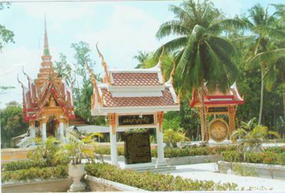

เมนู |
วัดแม่เจ้าอยู่หัว (พระนางเลือดขาว) แม่เจ้าอยู่หัว ( พระนางเลือดขาว ) เป็นบุตรคหบดีชาวจังหวัดพัทลุงเชื้อสายลังกา ( คุลา ) มารดาเป็นชาวบ้านเก่าหรือบ้านฆ็อง (บริเวณวัดแม่เจ้าอยู่หัว หมู่ที่ 3 ตำบลแม่เจ้าอยู่หัว อำเภอเชียรใหญ่ จังหวัดนครศรีธรรมราช) บิดา มารดา มีอาชีพค้าขาย ณ ชุมชนสายหาดแก้ว นครศรีธรรมราช หรือสันทรายเชียรใหญ่ทางทิศใต้ คือบริเวณวัดแม่เจ้าอยู่หัว ซึ่งเป็นชุมชนท่าเรือในสมัยโบราน สถานที่เกิดของนาง คือบ้านเก่าหรือบ้านฆ้อง ประมาณ พ.ศ. 1745 
|
| หน้าแรก | |
| วัดพระมหาธาตุ วรมหาวิหาร | |
| วัดเขาขุนพนมและศูนย์วิทยาศาสตร์เพื่อ การศึกษาเขาขุนพนม | |
| ศูนย์ศิลปาชีพบ้านเนินธัมมัง | |
| ศาล หลวงต้นไทร | |
| สวนสมเด็จพระศรีนครินทร์ 84 (ทุ่งท่าลาด) | |
| แหลมตะลุมพุก | |
| วัดแม่เจ้าอยู่หัว (พระนางเลือดขาว) | |
| เขื่อนบ้านพ่อ ปากพนัง | |
| น้ำตกกรุงชิง | |
| ล่องแก่งคลองกลาย | |
| อ่างเก็บน้ำจุฬาภรณ์ | |
| วัดอาตาปีคีรีเขต (วัดถํ้าเพด้าน) | |